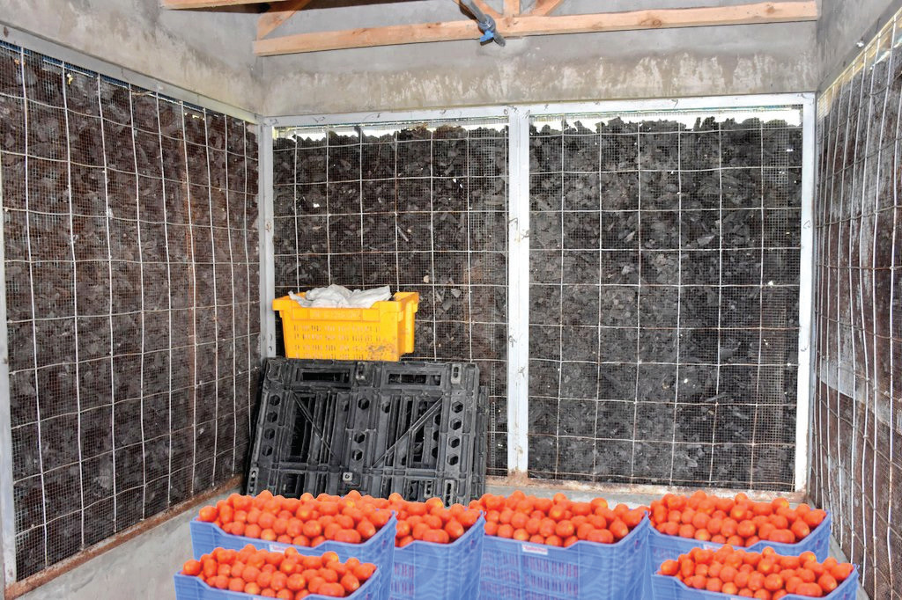
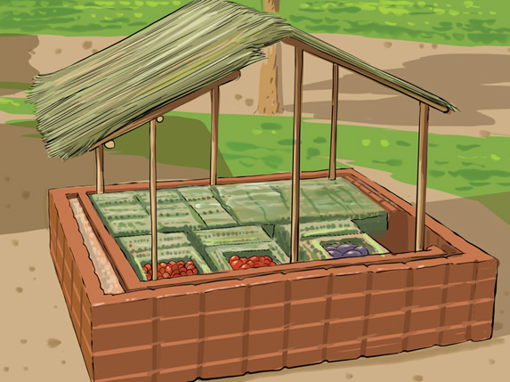

The packaging materials should allow the vegetables to breathe, which helps to prevent them from getting too hot. An ideal packaging material should be smooth and not too tall or large, as this could cause too much pressure on the vegetables at the bottom of the pack. This pressure can cause internal injuries, which can reduce the quality of the vegetables after they have been harvested.
Storage:
Storage of vegetables is important because it keeps them fresh for a long time. However, some vegetables are hard to keep fresh for a long time. For short-term storage, we can keep them at room temperature if there is good airflow to stop them from getting too hot. For longer-term storage, we can keep them at cooler temperatures and high humidity. We can also use a charcoal evaporative cooler or zero-energy cooling chamber to preserve vegetable produce (refer to Figure 4.8 (a) and (b)). Therefore, to prevent a lot of our harvested vegetables from spoiling, we need to find and use good storage methods.

Source: https://pbs.twimg.com/media/Eir8L16XcAAU1n9.jpg